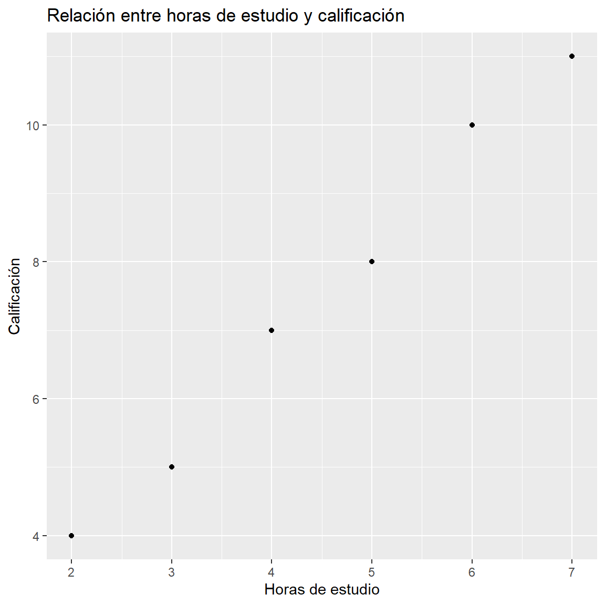
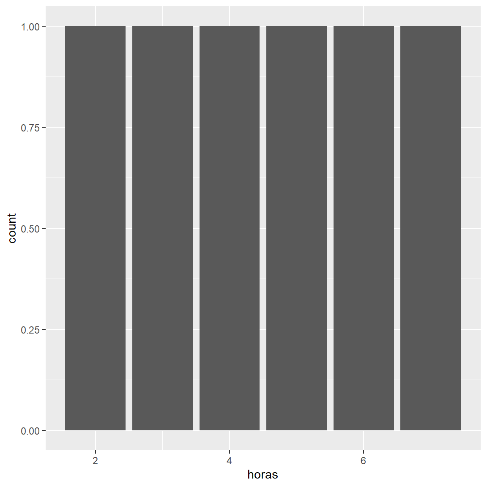

La estadística descriptiva proporciona herramientas para organizar, resumir y representar información obtenida a partir de un conjunto de datos. Una de las herramientas fundamentales para este propósito son las distribuciones de frecuencias, mediante las cuales es posible conocer cómo se distribuyen los valores de una o más variables dentro de una población o muestra.
Una distribución de frecuencias permite transformar un conjunto de datos inicialmente desorganizado en una estructura que facilita su interpretación. Para ello, se contabiliza el número de veces que aparece cada valor o categoría de una variable y, cuando es necesario, se incorporan frecuencias relativas y acumuladas.
Dependiendo del número de variables que se estudien simultáneamente, pueden construirse distribuciones de frecuencias unidimensionales o bidimensionales. Las primeras describen el comportamiento de una única variable, mientras que las segundas permiten estudiar conjuntamente dos variables y analizar la posible relación existente entre ellas.
En el entorno de R y RStudio, estas distribuciones pueden construirse mediante funciones básicas y paquetes especializados, lo que permite combinar los fundamentos estadísticos con herramientas computacionales para el tratamiento y análisis de datos.
Conceptos fundamentales
Antes de estudiar las distribuciones de frecuencias es necesario distinguir algunos conceptos básicos.
Población
La población es el conjunto total de individuos, elementos u objetos sobre los cuales se desea obtener información estadística.
Por ejemplo, si se desea estudiar el rendimiento académico de los estudiantes de una institución educativa, la población podría estar constituida por todos los estudiantes matriculados en dicha institución.
Muestra
Una muestra es un subconjunto de elementos seleccionados de una población con el propósito de obtener información sobre ella.
Por ejemplo, si de los 800 estudiantes de una institución se seleccionan 100 para realizar un estudio, estos 100 estudiantes constituyen la muestra.
Individuo o unidad estadística
El individuo o unidad estadística es cada uno de los elementos que conforman la población o muestra.
En un estudio sobre estudiantes, cada estudiante representa una unidad estadística.
Variable estadística
Una variable estadística es una característica observable o medible de los individuos de una población o muestra que puede presentar diferentes valores.
Las variables pueden clasificarse principalmente en:
Cualitativas: expresan características o categorías.
Continuas: pueden tomar cualquier valor dentro de un intervalo.
Por ejemplo:
Variable
Tipo
Sexo
Cualitativa
Programa académico
Cualitativa
Número de hermanos
Cuantitativa discreta
Edad
Cuantitativa continua
Estatura
Cuantitativa continua
Número de asignaturas aprobadas
Cuantitativa discreta
Distribución de frecuencias
Una distribución de frecuencias es una forma organizada de presentar los valores o categorías de una variable junto con el número de observaciones que corresponden a cada uno de ellos.
Su objetivo principal es resumir un conjunto de datos para facilitar su lectura, interpretación y análisis.
Las frecuencias más utilizadas son:
Frecuencia absoluta.
Frecuencia relativa.
Frecuencia absoluta acumulada.
Frecuencia relativa acumulada.
Frecuencia absoluta
La frecuencia absoluta de un valor o categoría es el número de veces que dicho valor aparece en el conjunto de datos.
Se representa habitualmente mediante:
f_i
donde f_i representa la frecuencia absoluta correspondiente al valor o categoría i.
La suma de todas las frecuencias absolutas debe ser igual al número total de observaciones:
\sum_{i=1}^{k} f_i = n
donde:
n = número total de observaciones.
k = número de valores o categorías diferentes.
Ejemplo
Supóngase que se registra el número de hermanos de 10 estudiantes:
1,\ 2,\ 0,\ 1,\ 3,\ 2,\ 1,\ 0,\ 2,\ 1
La distribución de frecuencias absolutas es:
Número de hermanos
Frecuencia absoluta
0
2
1
4
2
3
3
1
Total
10
Por ejemplo, el valor 1 presenta una frecuencia absoluta de 4 porque aparece cuatro veces.
Frecuencia relativa
La frecuencia relativa indica la proporción de observaciones que corresponde a cada valor o categoría.
Se calcula mediante:
h_i = \frac{f_i}{n}
También puede expresarse como porcentaje:
h_i(\%) = \frac{f_i}{n}\times100
La suma de las frecuencias relativas debe ser igual a 1:
\sum_{i=1}^{k} h_i = 1
o, expresada en porcentajes:
\sum_{i=1}^{k} h_i(\%) = 100\%
Para el ejemplo anterior:
Número de hermanos
f_i
h_i
Porcentaje
0
2
0.20
20%
1
4
0.40
40%
2
3
0.30
30%
3
1
0.10
10%
Total
10
1.00
100%
La frecuencia relativa permite comparar distribuciones incluso cuando los tamaños de las muestras son diferentes.
Frecuencia absoluta acumulada
La frecuencia absoluta acumulada representa la cantidad de observaciones que se encuentran hasta un determinado valor, considerando un orden establecido.
Se representa como:
F_i
y se calcula mediante:
F_i = \sum_{j=1}^{i}f_j
La última frecuencia absoluta acumulada siempre debe ser igual al tamaño total de la muestra:
F_k=n
Por ejemplo:
Número de hermanos
f_i
F_i
0
2
2
1
4
6
2
3
9
3
1
10
Esto permite afirmar, por ejemplo, que 6 estudiantes tienen como máximo 1 hermano.
La frecuencia acumulada es especialmente útil para variables cuantitativas que poseen un orden natural.
Frecuencia relativa acumulada
La frecuencia relativa acumulada expresa la proporción o porcentaje de observaciones que se encuentra hasta un determinado valor.
Se representa como:
H_i
y puede calcularse mediante:
H_i = \frac{F_i}{n}
o:
H_i = \sum_{j=1}^{i}h_j
La última frecuencia relativa acumulada debe ser igual a 1, o al 100%.
Número de hermanos
f_i
F_i
h_i
H_i
0
2
2
0.20
0.20
1
4
6
0.40
0.60
2
3
9
0.30
0.90
3
1
10
0.10
1.00
3 .Tabla de distribución de frecuencias unidimensional
Una distribución de frecuencias unidimensional estudia una sola variable estadística.
Una tabla completa puede contener las siguientes columnas:
Valor o categoría
Frecuencia absoluta f_i
Frecuencia relativa h_i
Frecuencia acumulada F_i
Frecuencia relativa acumulada H_i
La estructura dependerá del tipo de variable y del objetivo del análisis.
Para variables cualitativas nominales, por ejemplo, generalmente no tiene sentido calcular frecuencias acumuladas porque las categorías no poseen un orden natural.
Distribuciones de frecuencias para datos agrupados
Cuando una variable cuantitativa presenta muchos valores diferentes, puede resultar conveniente agrupar los datos en intervalos de clase.
Por ejemplo, en lugar de presentar individualmente las edades de cientos de estudiantes, se pueden utilizar intervalos como:
15–17 años.
18–20 años.
21–23 años.
24–26 años.
Cada intervalo recibe una frecuencia que indica cuántas observaciones pertenecen a él.
Intervalos de clase
Un intervalo de clase está definido por dos límites:
Límite inferior: menor valor considerado en el intervalo.
Límite superior: mayor valor considerado en el intervalo.
En variables continuas es importante establecer claramente los límites y el criterio utilizado para determinar a qué intervalo pertenece cada observación.
Amplitud del intervalo
La amplitud representa el tamaño de cada intervalo.
De manera general puede expresarse como:
A=L_s-L_i
donde:
L_s = límite superior.
L_i = límite inferior.
Cuando se construyen intervalos para una variable cuantitativa, se busca que sean mutuamente excluyentes y que cubran adecuadamente el rango de los datos.
3.1 .Representación gráfica de distribuciones unidimensionales
Las distribuciones de frecuencias pueden representarse mediante diferentes gráficos.
Diagrama de barras
Es apropiado principalmente para variables cualitativas y cuantitativas discretas.
Cada categoría o valor se representa mediante una barra cuya altura es proporcional a su frecuencia.
Histograma
Se utiliza principalmente para variables cuantitativas continuas o datos cuantitativos agrupados en intervalos.
A diferencia del diagrama de barras, las barras del histograma están unidas porque representan intervalos contiguos de una variable cuantitativa.
Polígono de frecuencias
Se construye uniendo mediante segmentos los puntos correspondientes a las marcas de clase y sus respectivas frecuencias.
Es útil para visualizar la forma general de una distribución y comparar diferentes conjuntos de datos.
Diagrama circular
Representa las categorías de una variable mediante sectores proporcionales a sus frecuencias relativas.
Es especialmente útil cuando se desea mostrar la composición porcentual de un conjunto de datos con pocas categorías.
4 .Distribuciones de frecuencias en R
R permite construir tablas de frecuencia mediante diferentes funciones.
Por ejemplo, para obtener las frecuencias absolutas de una variable:
También pueden calcularse las frecuencias acumuladas:
Mostrar código
cumsum(table(datos))
0 1 2 3
2 6 9 10
y las frecuencias relativas acumuladas:
Mostrar código
cumsum(prop.table(table(datos)))
0 1 2 3
0.2 0.6 0.9 1.0
Estas funciones permiten construir los componentes fundamentales de una distribución de frecuencias de manera rápida y reproducible.
5 .Distribución de frecuencias bidimensional
Una distribución de frecuencias bidimensional estudia simultáneamente dos variables estadísticas observadas sobre las mismas unidades estadísticas.
Mientras que una distribución unidimensional responde principalmente a la pregunta:
¿Cómo se distribuye una variable?
una distribución bidimensional permite plantear:
¿Cómo se distribuyen conjuntamente dos variables?
Por ejemplo, puede estudiarse la relación entre:
Horas de estudio y calificación.
Edad y estatura.
Sexo y preferencia académica.
Número de horas de sueño y rendimiento académico.
Nivel educativo de los padres y nivel educativo de los estudiantes.
Cada individuo aporta un par de valores:
(X,Y)
donde X representa una variable y Y representa la otra.
Tabla de contingencia
Una de las principales formas de representar una distribución bidimensional es mediante una tabla de contingencia o tabla de doble entrada.
En ella, una variable se coloca generalmente en las filas y la otra en las columnas.
Por ejemplo, supóngase que se registra el medio de transporte utilizado por un grupo de estudiantes según su sexo:
Bus
Bicicleta
A pie
Total
Categoría A
20
5
10
35
Categoría B
15
8
12
35
Total
35
13
22
70
Los valores internos de la tabla representan frecuencias conjuntas, mientras que los totales de filas y columnas reciben el nombre de frecuencias marginales.
Frecuencias conjuntas
La frecuencia conjunta indica cuántas observaciones presentan simultáneamente una determinada categoría o valor de la primera variable y una determinada categoría o valor de la segunda.
Se puede representar como:
n_{ij}
donde:
i identifica una categoría de la primera variable.
j identifica una categoría de la segunda variable.
La suma de todas las frecuencias conjuntas debe ser igual al número total de observaciones:
\sum_i\sum_j n_{ij}=n
Frecuencias marginales
Las frecuencias marginales se obtienen sumando las frecuencias conjuntas por filas o por columnas.
La frecuencia marginal correspondiente a una fila puede expresarse como:
n_{i\cdot}=\sum_j n_{ij}
Mientras que la frecuencia marginal correspondiente a una columna puede expresarse como:
n_{\cdot j}=\sum_i n_{ij}
Las frecuencias marginales permiten analizar cada variable individualmente dentro de la distribución bidimensional.
Frecuencias relativas conjuntas
La frecuencia relativa conjunta expresa la proporción de observaciones que pertenecen simultáneamente a una combinación determinada de categorías.
Se calcula mediante:
h_{ij}=\frac{n_{ij}}{n}
La suma de todas las frecuencias relativas conjuntas debe ser igual a 1:
\sum_i\sum_jh_{ij}=1
Por ejemplo, si una determinada combinación tiene una frecuencia conjunta de 20 dentro de una muestra de 100 individuos:
h_{ij}=\frac{20}{100}=0.20
Por tanto, esa combinación representa el 20% de las observaciones.
Frecuencias condicionales
Las frecuencias condicionales permiten estudiar la distribución de una variable cuando se fija una categoría o valor de la otra.
Por ejemplo, puede analizarse:
¿Cómo se distribuye el medio de transporte entre los estudiantes de una determinada categoría?
La frecuencia relativa condicional puede expresarse como:
h_{j|i}=\frac{n_{ij}}{n_{i\cdot}}
También puede calcularse en sentido contrario:
h_{i|j}=\frac{n_{ij}}{n_{\cdot j}}
La elección del denominador depende de cuál variable se considera como condición.
Independencia entre variables
Una de las aplicaciones importantes de las distribuciones bidimensionales consiste en analizar si existe evidencia de una relación entre dos variables.
Dos variables se consideran independientes cuando conocer el valor de una de ellas no proporciona información sobre la distribución de la otra.
En términos de probabilidades:
P(X=x_i,Y=y_j)=P(X=x_i)P(Y=y_j)
para todas las combinaciones posibles de valores.
En una tabla de contingencia, una forma práctica de explorar la independencia consiste en comparar las distribuciones condicionales.
Es importante diferenciar asociación de causalidad. El hecho de encontrar una relación estadística entre dos variables no demuestra por sí mismo que una variable sea la causa de la otra.
5.1 .Representaciones gráficas bidimensionales
La representación gráfica depende del tipo de variables analizadas.
Diagrama de dispersión
Cuando ambas variables son cuantitativas, el diagrama de dispersión es una herramienta fundamental.
Cada observación se representa mediante un punto:
(x_i,y_i)
El gráfico permite observar visualmente patrones como:
Cuando las dos variables son cualitativas o una es cualitativa y otra discreta, pueden utilizarse barras agrupadas para comparar frecuencias entre categorías.
Mapa de calor
Un mapa de calor permite representar visualmente las frecuencias de una tabla bidimensional mediante diferentes intensidades visuales.
Resulta útil cuando existen numerosas categorías y se desea identificar rápidamente las combinaciones con mayor o menor frecuencia.
6 .Distribuciones bidimensionales en R
En R, una tabla de contingencia puede construirse mediante la función table().
Por ejemplo:
Mostrar código
sexo <-c("A", "A", "B", "B", "A", "B", "A", "B")transporte <-c("Bus", "A pie", "Bus", "Bicicleta","Bus", "A pie", "Bicicleta", "Bus")tabla <-table(sexo, transporte)tabla
transporte
sexo A pie Bicicleta Bus
A 1 1 2
B 1 1 2
Las frecuencias relativas conjuntas pueden obtenerse mediante:
Mostrar código
prop.table(tabla)
transporte
sexo A pie Bicicleta Bus
A 0.125 0.125 0.250
B 0.125 0.125 0.250
Para obtener porcentajes:
Mostrar código
prop.table(tabla) *100
transporte
sexo A pie Bicicleta Bus
A 12.5 12.5 25.0
B 12.5 12.5 25.0
Las proporciones por filas pueden calcularse mediante:
Mostrar código
prop.table(tabla, margin =1)
transporte
sexo A pie Bicicleta Bus
A 0.25 0.25 0.50
B 0.25 0.25 0.50
Mientras que las proporciones por columnas se obtienen mediante:
Mostrar código
prop.table(tabla, margin =2)
transporte
sexo A pie Bicicleta Bus
A 0.5 0.5 0.5
B 0.5 0.5 0.5
Esto permite analizar distribuciones condicionales y comparar la composición de las categorías.
Visualización con ggplot2
El paquete ggplot2 proporciona herramientas flexibles para crear visualizaciones estadísticas.
Por ejemplo, un diagrama de dispersión puede construirse de la siguiente manera:
Mostrar código
library(ggplot2)datos <-data.frame(horas =c(2, 3, 4, 5, 6, 7),nota =c(4, 5, 7, 8, 10, 11))ggplot(datos, aes(x = horas, y = nota)) +geom_point() +labs(title ="Relación entre horas de estudio y calificación",x ="Horas de estudio",y ="Calificación" )

Para una tabla de frecuencias entre dos variables categóricas, pueden utilizarse gráficos de barras:
Mostrar código
ggplot(datos, aes(x = horas)) +geom_bar()

La ventaja de utilizar ggplot2 es que permite construir gráficos mediante una lógica basada en capas, facilitando su personalización y reproducción.
7 .Diferencia entre distribuciones unidimensionales y bidimensionales
La principal diferencia se encuentra en el número de variables analizadas simultáneamente.
Característica
Unidimensional
Bidimensional
Número de variables
1
2
Objetivo
Describir una variable
Estudiar dos variables conjuntamente
Frecuencia principal
f_i
n_{ij}
Representación frecuente
Barras, histograma, circular
Tabla de contingencia, dispersión
Frecuencias acumuladas
Pueden utilizarse
No son el elemento central
Relación entre variables
No se analiza
Puede analizarse
Ejemplo
Edad de los estudiantes
Edad y calificación
Una distribución unidimensional permite conocer la estructura individual de una variable, mientras que una distribución bidimensional amplía el análisis al estudiar conjuntamente dos variables.
Importancia de las distribuciones de frecuencias en el análisis de datos
Las distribuciones de frecuencias constituyen una etapa fundamental del análisis exploratorio de datos porque permiten:
Organizar información inicialmente desordenada.
Identificar valores o categorías frecuentes.
Comparar proporciones.
Reconocer patrones en los datos.
Detectar posibles valores atípicos o inconsistencias.
Facilitar la construcción de gráficos.
Servir como base para cálculos estadísticos posteriores.
Explorar posibles relaciones entre variables.
En un flujo de trabajo con R y RStudio, las distribuciones de frecuencia pueden considerarse una herramienta inicial para conocer la estructura del conjunto de datos antes de realizar análisis estadísticos más avanzados.
Flujo de trabajo en R para el análisis de frecuencia
Un análisis de frecuencias puede organizarse siguiendo una secuencia general:
Mostrar código
# 1. Importar o crear los datos# 2. Explorar la estructurastr(datos)
'data.frame': 6 obs. of 2 variables:
$ horas: num 2 3 4 5 6 7
$ nota : num 4 5 7 8 10 11
Este procedimiento favorece un análisis reproducible, debido a que las operaciones quedan registradas en el código y pueden repetirse sobre nuevos conjuntos de datos.
Consideraciones para la interpretación
La construcción de una tabla de frecuencias no constituye por sí sola el análisis estadístico. Es necesario interpretar los resultados de acuerdo con el contexto en el que fueron obtenidos.
Al interpretar una distribución de frecuencias se pueden plantear preguntas como:
¿Cuál es la categoría con mayor frecuencia?
¿Qué porcentaje de las observaciones corresponde a determinada categoría?
¿Cómo se concentra la información?
¿Existen categorías poco frecuentes?
¿Qué diferencias se observan entre grupos?
¿Existe evidencia descriptiva de una asociación entre las variables?
¿Los resultados son representativos de la población o solamente describen la muestra?
En el caso de distribuciones bidimensionales, además, es importante distinguir entre una asociación estadística y una relación causal.
Síntesis conceptual
Las distribuciones de frecuencias constituyen una herramienta básica para resumir datos estadísticos.
En una distribución unidimensional, se estudia una única variable y se pueden calcular frecuencias absolutas, relativas y acumuladas, dependiendo del tipo de variable.
En una distribución bidimensional, se estudian simultáneamente dos variables. Las frecuencias conjuntas, marginales y condicionales permiten describir cómo se distribuyen los datos y explorar posibles asociaciones entre las variables.
R y RStudio proporcionan herramientas para realizar estos procedimientos de manera reproducible. Funciones como table(), prop.table() y cumsum(), junto con herramientas de visualización como ggplot2, permiten pasar de los conceptos estadísticos a un análisis computacional de los datos.
El dominio de las distribuciones de frecuencias constituye, por tanto, una base importante para avanzar hacia técnicas estadísticas posteriores como medidas descriptivas, análisis de asociación, correlación, regresión y métodos inferenciales.
8 .Conclusión
Las distribuciones de frecuencias permiten transformar datos individuales en información estructurada y comprensible. Su utilización facilita la descripción de las características de una variable y, en el caso bidimensional, permite explorar conjuntamente dos variables y sus posibles relaciones.
El uso de R y RStudio complementa estos fundamentos estadísticos al proporcionar herramientas para automatizar cálculos, generar tablas y producir representaciones gráficas reproducibles. De esta manera, el análisis de frecuencias no solo constituye un procedimiento matemático, sino también una etapa esencial dentro de un flujo de trabajo moderno de análisis de datos.